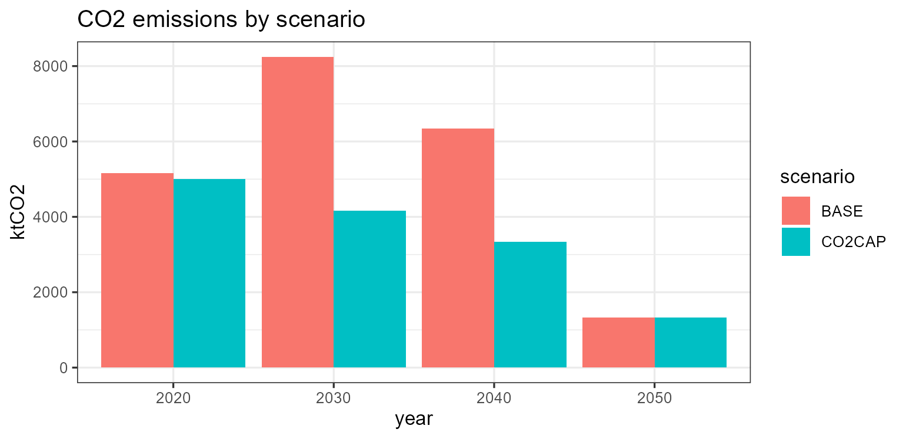

Once a model is built (see Model bricks and UTOPIA I) and solved (see Solver backends and UTOPIA II), a handful of utility functions do the rest of the day-to-day work: pull objects and results out, edit a piece and re-solve, organize scenarios on disk, and compare runs. This article tours that layer.
We use the packaged single-region UTOPIA kit as a running example, and keep all scenario files under a temporary folder.
set_scenarios_path(file.path(tempdir(), "wf")) # where scenarios are written
um <- utopia_modules$electricity$reg1
mod <- newModel("UTOPIA", data = um$repo,
calendar = utopia_modules$calendars$utopia_s4h24,
region = um$regions,
horizon = utopia_modules$horizons$base, discount = 0.05)
# interpolate + solve on the bundled GLPK; echo = FALSE keeps the log quiet
scen <- interpolate_model(mod, name = "BASE") |>
solve_scenario(solver = solver_options$glpk, echo = FALSE)Selecting objects: getObject()
getObject() returns the building-block objects
held in a repository, model or scenario, filtered by
class, name,
description, region or any object
slot. It is the object-level counterpart of getData()
(which returns their data). By default it returns a named list keyed by
object name; drop = TRUE unwraps a single match into the
object itself.
repo <- um$repo
names(getObject(repo, class = "technology")) # all technologies
#> [1] "ECOA" "EGAS" "ENUC" "ESOL" "EWIN" "EHYD" "EBIO"
names(getObject(repo, class = "supply", region = "R1"))
#> [1] "SUP_COA" "SUP_BIO" "SUP_NUC" "RES_SOL" "RES_WIN"
getObject(repo, name = "ECOA", drop = TRUE)@invcost # the ECOA object itself
#> region year invcost wacc eac retcost
#> 1 <NA> NA 2000 NA NA NARegion matching reads @region slots and the
region/src/dst columns of any
data.frame slot, so it works for every class; region-agnostic objects
(e.g. commodities) match every region. getObject() accepts
a scenario too, so the same query works before or after
solving.
Extracting data: getData()
getData() pulls parameter and
variable data out of a scenario as tidy data.frames.
With merge = TRUE it returns one long frame (a named list
otherwise); every frame carries a scenario and a
name column.
getData(scen, "vObjective", merge = TRUE)$value # total system cost, MEUR
#> [1] 13007.08
gen <- getData(scen, "vTechOut", comm = "ELC", merge = TRUE)
head(gen[, c("scenario", "tech", "region", "year", "slice", "value")], 4)
#> # A tibble: 4 × 6
#> scenario tech region year slice value
#> <chr> <chr> <chr> <int> <chr> <dbl>
#> 1 BASE ECOA R1 2020 ANNUAL 21.7
#> 2 BASE ECOA R1 2030 ANNUAL 34.7
#> 3 BASE ECOA R1 2040 ANNUAL 25.5
#> 4 BASE EGAS R1 2040 ANNUAL 2.82The ... accept set filters, exact
(comm = "ELC") or regex (comm_ = "^EL").
timeframe = c("lowest","highest","all") controls how
slice-indexed values are returned. Rename dimensions or recode values on
the way out with newNames = / newValues = (or
afterwards with renameSets() / revalueSets()),
and discover which parameters carry a given set with
findData():
names(findData(scen, setsNames_ = "tech")) # parameters indexed by 'tech'
#> [1] "pTechWeatherAf" "pTechWeatherAfs" "pTechWeatherAfc"
#> [4] "pTechCap2act" "pTechEac" "pTechEmisComm"
#> [7] "pTechOlife" "pTechFixom" "pTechInvcost"
#> [10] "pTechStock" "pTechVarom" "pTechAf"
#> [13] "pTechRampUp" "pTechRampDown" "pTechAfs"
#> [16] "pTechGinp2use" "pTechCinp2ginp" "pTechUse2cact"
#> [19] "pTechAct2AInp" "pTechCap2AInp" "pTechAct2AOut"
#> [22] "pTechCap2AOut" "pTechNCap2AInp" "pTechNCap2AOut"
#> [25] "pTechCinp2AInp" "pTechCout2AInp" "pTechCinp2AOut"
#> [28] "pTechCout2AOut" "pTechCact2cout" "pTechCinp2use"
#> [31] "pTechCvarom" "pTechAvarom" "pTechShare"
#> [34] "pTechAfc" "pTechCap" "pTechNewCap"
#> [37] "pTechRet" "pTechRetCost" "vTechInv"
#> [40] "vTechEac" "vTechRetCost" "vTechFixom"
#> [43] "vTechVarom" "vTechNewCap" "vTechRetiredStockCum"
#> [46] "vTechRetiredStock" "vTechRetiredNewCap" "vTechCap"
#> [49] "vTechAct" "vTechInp" "vTechOut"
#> [52] "vTechAInp" "vTechAOut" "vTechEmsFuel"find_in_model(mod, "ECOA") text-searches every object
slot for a value — handy for locating where a name is used.
Editing an object: update()
update() edits the slots of a single
model object (a technology, commodity, demand, …). It does
not operate on a whole model or scenario — you update
the object, put it back into the repository with
add(..., overwrite = TRUE), and re-interpolate/solve.
ECOA <- getObject(repo, name = "ECOA", drop = TRUE)
ECOA <- update(ECOA, invcost = data.frame(invcost = 2500)) # pricier coal capex
repo_hi <- add(repo, ECOA, overwrite = TRUE) # swap it back in
mod_hi <- newModel("UTOPIA_HI", data = repo_hi,
calendar = utopia_modules$calendars$utopia_s4h24,
region = um$regions, horizon = utopia_modules$horizons$base,
discount = 0.05)(For an already-interpolated scenario,
update_parameter(scen, param, data) writes rows straight
into its parameter store.)
Scenario folders and structure
The scenarios directory is an option — read it with
get_scenarios_path(), set it with
set_scenarios_path() (default "scenarios/").
Each scenario gets its own folder, named by
make_scenario_dirname() as
name_model_calendar_horizon:
get_scenarios_path()
#> [1] "C:\\Users\\admin\\AppData\\Local\\Temp\\Rtmpqm13P1/wf"
make_scenario_dirname(scen)
#> [1] "BASE_UTOPIA_utopia_s4h24_base"Saving a scenario writes an Arrow-backed folder that
mirrors the scenario’s structure — a thin scen.RData shell
plus each large data slot as a dataset:
<scenarios-path>/<name_model_calendar_horizon>/
├── scen.RData # thinned S4 scenario shell
├── class · format # "scenario" · "parquet"
├── logfile.csv # timestamped save log
├── model/data/<repo>/<object>/<slot>/ # the model objects' data
├── modInp/parameters/<param>/ # interpolated input parameters
├── modOut/variables/<var>/ # solved variables (vTechOut, ...)
└── script/<backend>_<solver>_<method>/ # solver working directoryA scenario knows whether its data is in RAM or on disk via
isInMemory(); when on disk, the slots are empty and read
lazily from the folder on demand.
Saving and loading
save_scenario() spills the scenario to its folder and
returns the (now on-disk) object;
load_scenario(path, env = NULL) reads the shell back. Its
data stays on disk until requested — getData() reads it
lazily, or obj2mem() pulls the whole scenario back into
memory.
saved <- save_scenario(scen, verbose = FALSE)
ld <- load_scenario(saved@path, env = NULL, verbose = FALSE)
basename(saved@path) # the scenario folder
#> [1] "BASE_UTOPIA_utopia-s4h24_base"
isInMemory(saved) # FALSE -- data is on disk
#> [1] FALSE
getData(ld, "vObjective", merge = TRUE)$value # lazy read, no full load
#> [1] 13007.08
ld <- obj2mem(ld) # rehydrate fully into RAM
isInMemory(ld)
#> [1] TRUEA name-based scenario registry (
register(),getScenario(),get_registry()) is under development; for now, organize runs withset_scenarios_path()and round-trip them withsave_scenario()/load_scenario().
Comparing scenarios
Layer a policy lever onto the base model to get a second scenario,
then pass a named list of scenarios to
getData() — the scenario column makes the
comparison a one-liner:
scen_cap <- interpolate_model(mod, "CO2CAP", um$CO2_CAP) |> # add the CO2 cap lever
solve_scenario(solver = solver_options$glpk, echo = FALSE)
emis <- getData(list(BASE = scen, CO2CAP = scen_cap), "vEmsFuelTot",
comm = "CO2", merge = TRUE)
emis |>
group_by(scenario, year) |> summarise(ktCO2 = sum(value), .groups = "drop") |>
ggplot(aes(factor(year), ktCO2, fill = scenario)) +
geom_col(position = "dodge") +
labs(x = "year", title = "CO2 emissions by scenario") + theme_bw()
sapply(list(BASE = scen, CO2CAP = scen_cap),
function(s) round(getData(s, "vObjective", merge = TRUE)$value[1]))
#> BASE CO2CAP
#> 13007 13427To reason about model size rather than results,
model_size() estimates the parameter/variable/constraint
counts of an interpolated scenario, and size() reports its
in-memory footprint:
model_size(scen)
#> model_size: BASE
#> parameters : 122 value, 236 maps, 13 sets
#> param rows : 5,938
#> estimate : ~15,338 variables, ~16,832 constraints (from gating maps)
#> top parameters by rows:
#> pTechCinp2use 1,536
#> pWeather 1,004
#> pSliceWeight 404
#> pExportRowPrice 404
#> pExportRow 404
#> pSliceAgg 400
#> pDemand 384
#> pTechAf 384
#> pStorageInpEff 384
#> pStorageOutEff 384
#> pSliceShare 101
#> pTechFixom 23
#> pTechEac 20
#> pTechInvcost 20
#> pTechStock 14
size(scen)
#> [1] "6 Mb"For a systematic check that a build is correct and
efficient, compare_interp_settings(mod) and
compare_solve_settings(mod, solvers = ...) interpolate (and
solve) the model under different storage settings and tabulate build
size, time and — crucially — confirm the objective is invariant across
fold/sparse/prune. These run
several builds, so they are best run interactively:
compare_interp_settings(mod) # size/time by setting
compare_solve_settings(mod, solvers = list(solver_options$glpk))See also
- Model bricks and UTOPIA I — building the objects and the model.
- Solver backends and UTOPIA II — interpolating and solving.
-
?getData,?getObject,?update,?save_scenario,?load_scenario,?model_size,?compare_solve_settings.